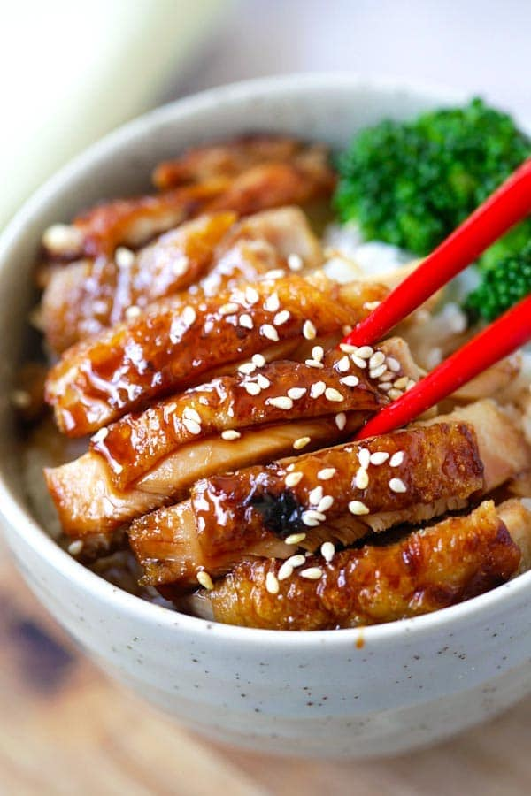

Teriyaki Chicken

Description
Teriyaki Chicken is a grilled chicken coated with a sweet soy sauce based sauce
Ingredients
- Ginger
- Garlic
- Green Onion
- Onion
- Soy Sauce
- Sake
- Mirin
- Sugar
- Potato Starch
- Chicken Thigh
- Canola Oil
- Salt and Pepper
Steps
- In a pan,broil the Ginger, Garlic, Green Onion, and Onion until it is charred
- Put in 1 cup of Soy Sauce, 1 cup of Mirin, 1/2 cup of Sake, and 1 cup of Sugar
- Bring the pan into a boil and let it simmer for 10 minutes
- Season the Chicken Thigh with Salt and Pepper
- Coat the Chicken Thigh with the Potato Starch
- In a separate pan, fry the Chicken Thigh in Medium Heat using the Canola Oil
- Once the chicken is crispy on the outside, lower the heat
- Brush the teriyaki sauce made earlier on the chicken until it's fully coated over low heat